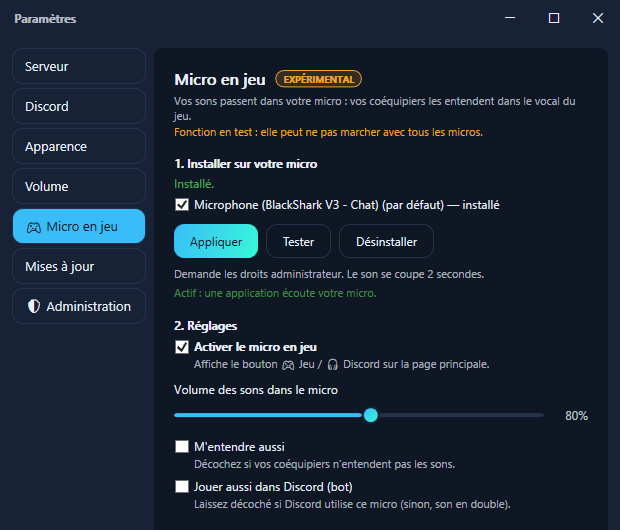
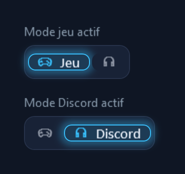

Pour Discord, rien ne change : le bot WaseBoard joue toujours vos sons dans votre salon vocal. Le micro en jeu sert aux vocaux des jeux (Valorant, CS2, Fortnite…), où le bot ne peut pas aller.
Fonction en test. Elle marche sur les micros testés, mais peut ne pas marcher avec tous. Si votre micro n'est pas compatible, WaseBoard vous le dit.

Un bouton apparaît dans la barre du haut de WaseBoard. Un clic bascule :
Le mode actif est allumé. Vos raccourcis clavier suivent le mode choisi.

Une application écoute ce micro, mais l'effet n'y tourne pas : soit ce micro n'est pas compatible, soit l'application le prend en mode exclusif (cela contourne tous les effets).
Essayez un autre micro, ou désactivez le mode exclusif : Panneau de configuration › Son › onglet Enregistrement › votre micro › Propriétés › Avancé › décochez « Autoriser les applications à prendre le contrôle exclusif de ce périphérique ».
À réparer : une mise à jour du pilote de votre micro a retiré l'effet. Mettre à jour : votre WaseBoard apporte une version plus récente de l'effet. Dans les deux cas, un clic sur le bouton de la page Micro en jeu suffit.
C'est le cas des micros virtuels (VB-Cable, Steam Streaming Microphone…) : ils n'acceptent pas d'effets.
L'effet ne touche pas au jeu : il fonctionne dans Windows, sur le son du micro, comme les effets fournis avec beaucoup de casques. Rien n'est injecté dans le jeu. Aucun éditeur ne publie de liste officielle des logiciels autorisés.
Non. L'effet ajoute simplement les sons au micro, et ne fait rien quand aucun son ne joue.
Oui, pour jouer des sons. WaseBoard fermé, votre micro marche normalement, sans les sons.
Un petit fichier est copié dans C:\Program Files\WaseBoard\MicFx, et l'effet est ajouté à la fin de la liste des effets de votre micro : ceux déjà présents (ceux de votre casque, par exemple) restent en place.
Paramètres › Micro en jeu › Désinstaller remet tout exactement comme avant. Désinstaller WaseBoard retire aussi l'effet (Windows demande l'autorisation administrateur).